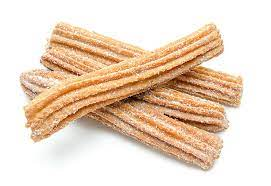

Churros

Description
Churros (Mexican fritters) are very common at fairs. In my border hometown, the line at this stand is always overwhelming. People wait hours in line just to get a taste of these churros. I have run across several recipes but this is the best one by far.
Ingredients
- Water
- Sugar
- Salt
- Oil
- Flour
- Cinnamon
Steps
- Boil water, sugar, salt, and vegetable oil. Remove from the heat, then stir in flour.
- Transfer the dough to a pastry bag and pipe into strips.
- Fry the strips in hot oil until they're golden.
- Drain the churros, then roll in cinnamon-sugar.
Back to homepage